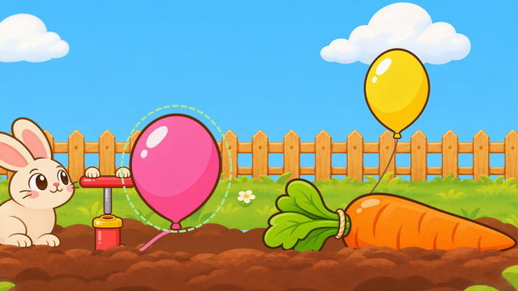

菜园木牌
MP5 界面设计方案 v2.0 的样张。界面不再是一台“测量仪器”，而是拔萝卜和兔子的气球所在的那片菜园：页面背景就是菜园，内容写在插进土里的木牌上，所有东西都用和游戏画面相同的可可色粗描边。样张按 1152×648（Godot 窗口）绘制，数字是示意数据。
拔牙训练装置
游戏选择
已连接（模拟）
EN中文
摇牙挑战
关卡 A 拔萝卜，关卡 B 兔子的气球
拔牙导航
三维施力方向（即将推出）
精准拔出
稳定拉力（即将推出）
摇牙挑战

气球随力矩变大。跟着虚线圈把气球慢慢吹到目标大小并保持住，它就会绑到大萝卜上；加力太快会漏气，超过上限会爆。绑好 5 个气球，大萝卜就带着兔子飞走。
关卡
难度
仅虚线圈提示，有倒计时，允许爆 3 次。
拔牙训练装置
入门测试
已连接（模拟）
EN中文
方向
42°
目标 30°–60°
已解锁 ✓
力
10.5N
目标 8–12 N
保持中
力矩
0.08N·m
目标 0.15–0.25 N·m
未解锁
键盘：←/→ 方向，↑/↓ 力，Q/E 力矩
评估报告：兔子的气球
本局
标准加力线
爆掉
绑好
A
86.4综合评分（满分 100）
安全权重 25%49
爆掉 1 次，峰值 0.43 N·m
精准权重 25%91
与标准线误差 0.012 N·m
稳定权重 20%85
一次保持成功 80%
加力平稳权重 15%97
加力速度匹配 96%，没有漏气
效率权重 10%100
每个气球用时 7.1 秒
颜色
天空蓝 #5CC8F8
页面底色
页面底色
木牌 #F7CF8A
面板
面板
奶油纸 #FFF4DF
铭牌、报告
铭牌、报告
可可墨 #5E3410
描边、正文
描边、正文
干土 #9A6A44
次要文字
次要文字
胡萝卜 #FF7F1F
主按钮、指针
主按钮、指针
叶绿 #5FB52A
在目标区
在目标区
向日葵 #FFC531
等待、接近上限
等待、接近上限
番茄 #E8442E
失误、故障
失误、故障
字体
拔牙训练装置
ZCOOL KuaiLe：只用于 20 号以上的标题、牌子上的名字、评级章
0.21 N·m
Atkinson Hyperlegible Next + Noto Sans SC：正文、按钮和所有读数
按钮与选择
状态与提示
已连接
连接中
断线
🥕
第一根萝卜哇，真的出来了！